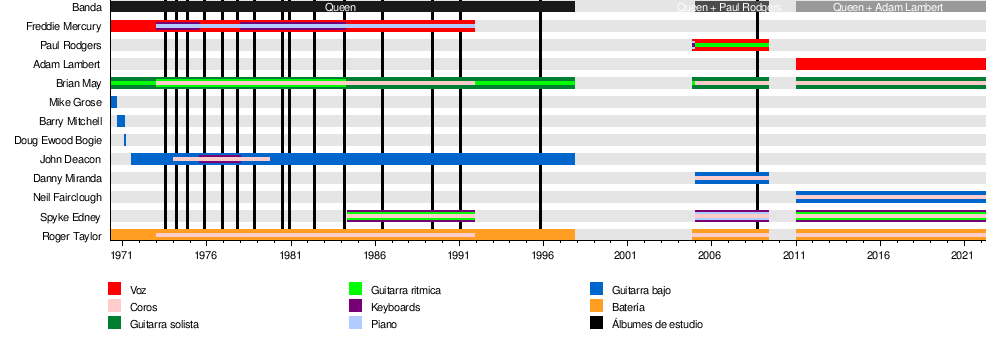

En 1968 el guitarrista Brian May y el baterista Roger Taylor se unieron con el cantante Tim Staffell conformando así el conjunto Smile, un grupo de hard rock psicodélico. En esta etapa, May ya usaba su guitarra Red Special, la cual había construido junto a su padre a los 16 años. Smile firmó con Mercury Records en 1969, y tuvo su primera sesión de grabación en los Trident Studios ese año. Staffell estudiaba en Ealing Art College con Freddie Mercury, a quien presentó a la banda. Mercury, que para entonces había integrado formaciones como Ibex, Wreckage o Sour Milk Sea, era un acérrimo fanático del grupo. En abril de 1970, Staffell abandonó Smile para unirse a otra banda, Humpy Bong. May y Taylor decidieron contactar entonces con Mercury para que fuese el nuevo cantante.
Poco tiempo después de la llegada de Mercury, el grupo decidió cambiarse el nombre por el de Queen. La idea vino de Mercury y fue apoyada por Taylor, aunque May se mostró reacio al principio. Otras ideas para posibles nombres fueron Grand Dance –que viene de una trilogía de libros que Taylor y May habían leído– o The Rich Kids, que agradaba a Taylor. Pasaron una gran cantidad de tiempo ensayando, gracias a que May era muy respetado en el Imperial College y tenía el permiso especial para usar los teatros como lugar de ensayo. Generalmente tocaban canciones de otros artistas, aunque también rescataron algunas canciones de Ibex, Wreckage y Smile. Queen realizó su primer concierto en el City Hall de Truro el 27 de junio de 1970, y poco después, el 18 de julio, actuaron en el Imperial College.2526 En esta época, Freddie cambió su apellido artístico de Bulsara a Mercury, en honor al dios Mercurio.27 Durante una actuación de Queen en la escuela de mujeres de St. Helen, parte del soporte del micrófono de Freddie Mercury se soltó y cayó al suelo, quedándose con el micrófono enganchado a la primera parte del soporte. Mercury siguió con la actuación. De ahí surgió el característico bastón con micrófono que usó durante todos los conciertos desde entonces.
John Deacon en 1977. Deacon fue, en marzo de 1971, el último miembro en unirse al grupo. Durante este periodo, Queen tuvo varios bajistas. El primero fue Mike Grose, quien estuvo en los tres primeros conciertos de la banda. Barry Mitchell ejerció ese rol las once actuaciones siguientes. En enero de 1971, Mitchell decidió retirarse del conjunto. En la búsqueda de un nuevo bajista, apareció Doug Ewood Bogie, quien consideraron una buena opción al tener algo de equipos. Tras dos actuaciones en febrero en el Kingston Polytechnic, el grupo le pidió amistosamente a Doug que buscara otra banda. Seguidamente, John Harris, un amigo que ayudó al conjunto con las luces y los equipos, llevó a Taylor y May a una discoteca en Maria Assumpta Teaching College. Allí les presentó a un bajista amigo suyo, John Deacon. A Deacon, que no estaba en ninguna banda, se le ofreció una audición. Durante la prueba apreciaron su potencial como músico, además de su silencio y tranquilidad. El 1 de marzo, Deacon aceptó formar parte de Queen.30 El primer concierto con el nuevo bajista se celebró el 2 de julio de 1971, en Surrey, y poco después volvieron a tocar en el Imperial College e iniciaron una gira por Cornualles.
Mercury diseñó en esta época el célebre logotipo de Queen, llamado Queen crest. La insignia combina los signos del zodiaco de los cuatro componentes del conjunto: dos leones por Leo (representando a Deacon y Taylor), un cangrejo por Cáncer (representando a May), y dos hadas por Virgo (representando a Mercury). Los leones se encuentran abrazando una letra Q, el cangrejo descansa sobre la letra, y de él se elevan unas llamaradas. Las dos hadas están debajo de cada león. Dentro de la Q hay una corona. El logotipo es eclipsado por una enorme ave Fénix. Todo el conjunto tiene una similitud con el Escudo del Reino Unido, en particular por los leones. El logotipo original, que se encuentra en el reverso del primer álbum, fue un dibujo con trazos simples, pero la versión más compleja y en color, se empleó para álbumes posteriores.
Terry Yeadon, un amigo de Brian May, estaba estableciendo un nuevo complejo de estudios en Wembley perteneciente a De Lane Lea Studios. El estudio necesitaba músicos para probar los nuevos equipos, así que May fue con Queen a probarlo. Allí realizaron sus primeros registros, los cuales fueron "Liar", "Keep Yourself Alive", "The Night Comes Down" y "Jesus", en 1971. Con estos demos el grupo empezó a buscar casas discográficas que estuviesen interesadas en su trabajo, pero ninguna se mostró interesada en un primer momento.
Se incluyen los períodos con Paul Rodgers y Adam Lambert.
